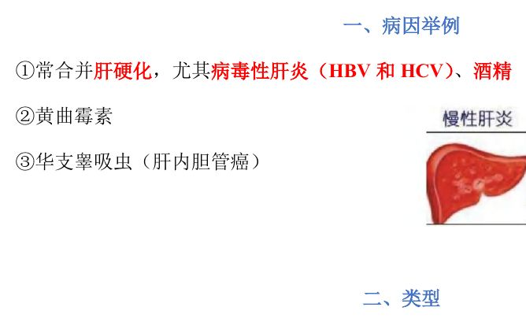
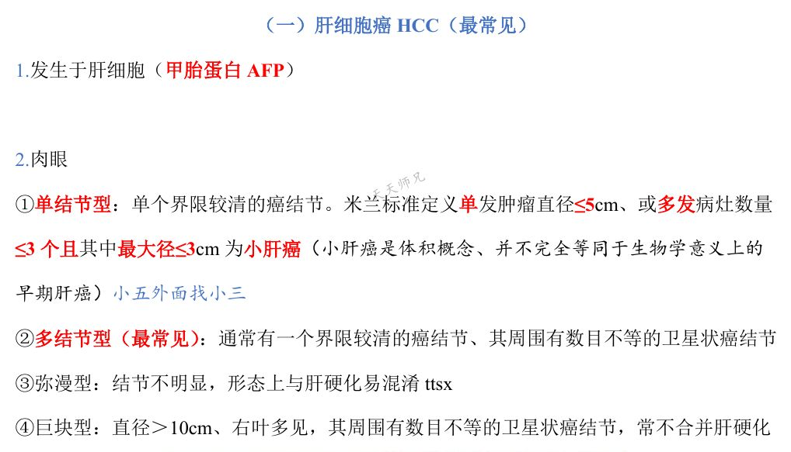
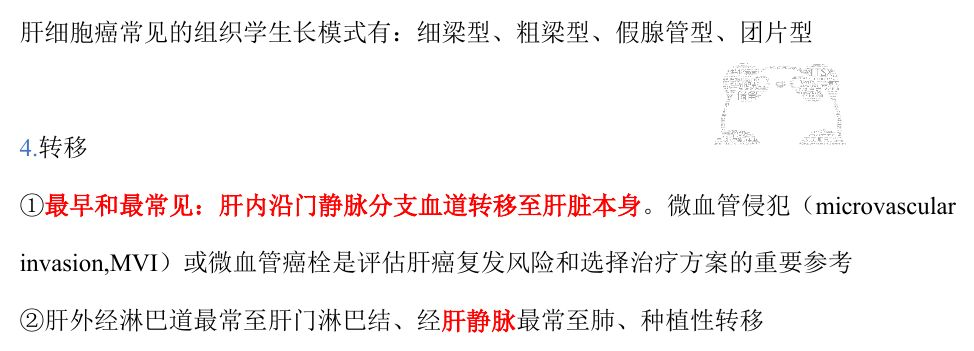
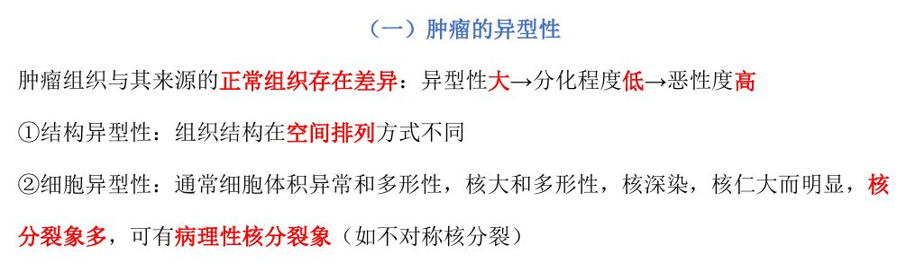
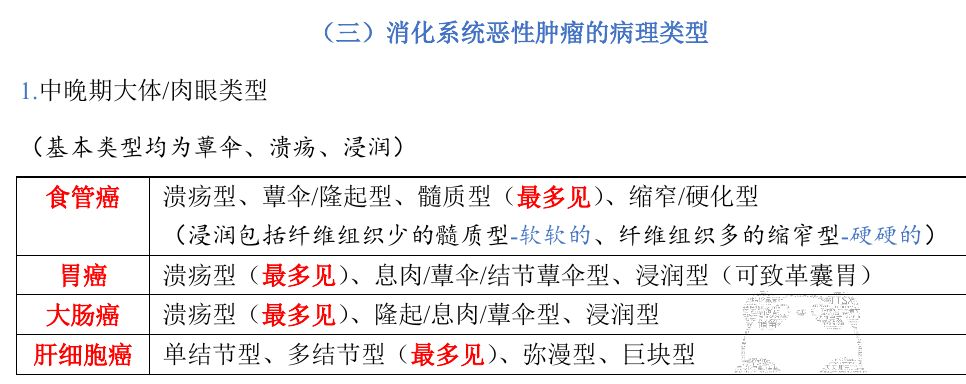
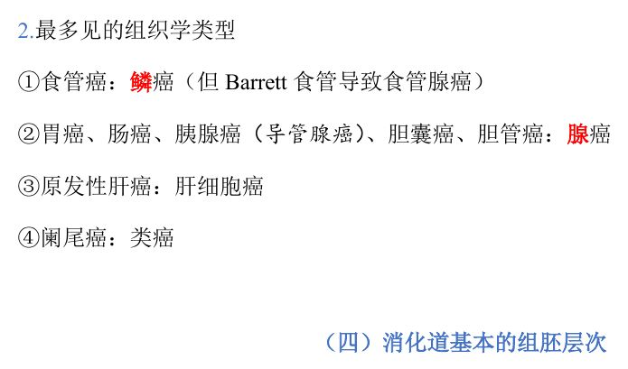
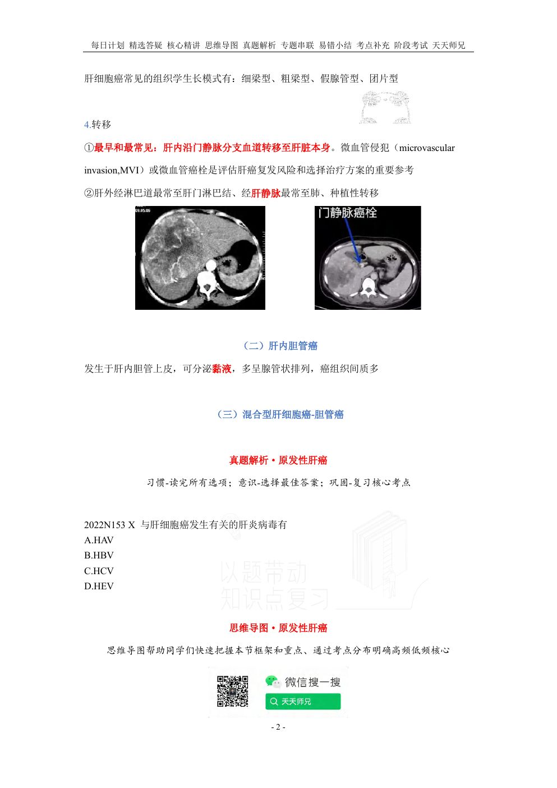
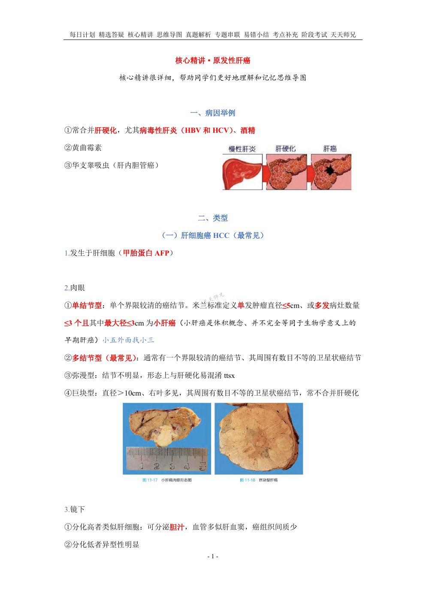
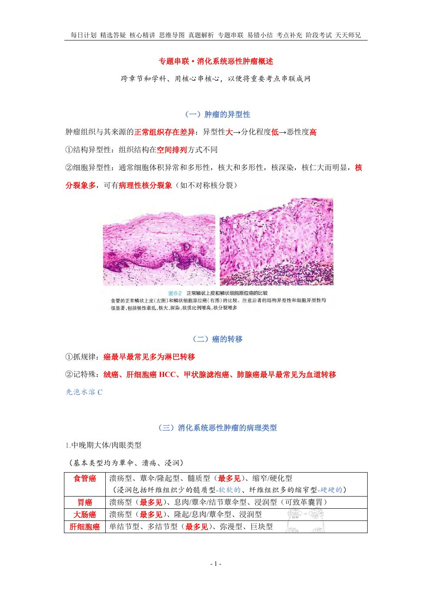
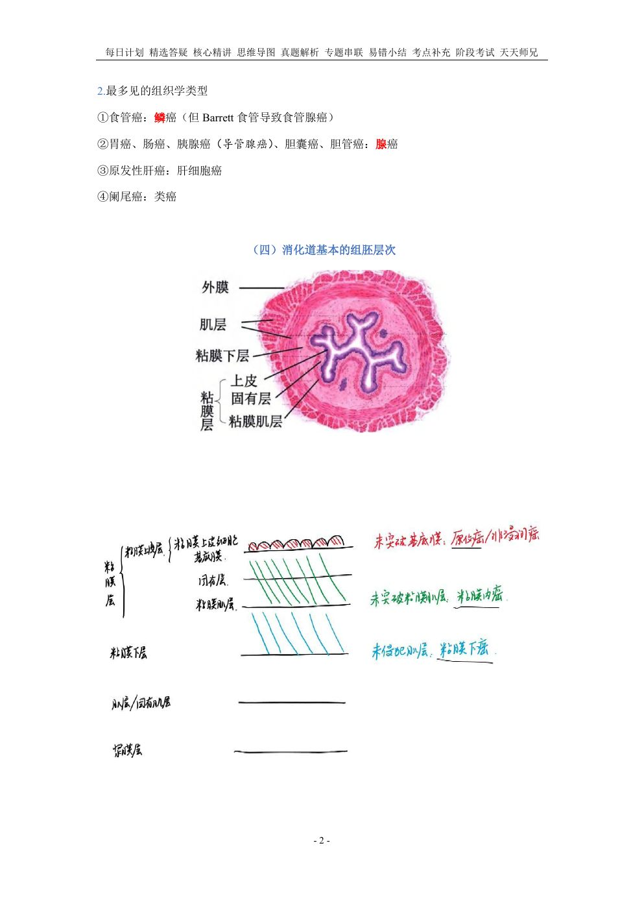

用法：A型题点选项即判；X型题先多选、再点【判卷】；答完自动展开解析。刷完本课再过一遍底部【本课速记卡】，效果最好。
一、病因举例3 题
A型·单选Q1P1 · 病因
原发性肝癌最常合并的病变是
答案与解析
答案：A
原发性肝癌常合并肝硬化，尤其是病毒性肝炎（HBV、HCV）与酒精相关者。
📖 讲义定位：P1 · 病因

📷 讲义原图 · P1 · 病因
A型·单选Q2P1 · 病因
与肝内胆管癌发生有关的寄生虫是
答案与解析
答案：B
华支睾吸虫与肝内胆管癌相关（讲义病因举例）。
📖 讲义定位：P1 · 病因
X型·多选Q3P1 · 病因
与肝细胞癌发生有关的因素有
答案与解析
答案：BCD
HBV/HCV（尤其合并肝硬化）、酒精、黄曲霉素等与肝细胞癌相关；HEV 无明确关系（A 错）。
📖 讲义定位：P1 · 病因
二、肝细胞癌：肉眼类型5 题
A型·单选Q4P1 · 肝细胞癌·肉眼
肝细胞癌最常见的肉眼类型是
答案与解析
答案：D
多结节型最常见。
📖 讲义定位：P1 · 肝细胞癌·肉眼

📷 讲义原图 · P1 · 肝细胞癌·肉眼
A型·单选Q5P1 · 肝细胞癌·肉眼
多结节型肝细胞癌的典型表现是
答案与解析
答案：C
多结节型：通常一个界限较清的癌结节＋周围卫星状癌结节。
📖 讲义定位：P1 · 肝细胞癌·肉眼
A型·单选Q6P1 · 肝细胞癌·肉眼
巨块型肝细胞癌的特点是
答案与解析
答案：C
巨块型：直径＞10cm、右叶多见，周围可有卫星结节，常不合并肝硬化。
📖 讲义定位：P1 · 肝细胞癌·肉眼
A型·单选Q7P1 · 肝细胞癌·肉眼
弥漫型肝细胞癌的特点是
答案与解析
答案：D
弥漫型：结节不明显，形态上与肝硬化易混淆。
📖 讲义定位：P1 · 肝细胞癌·肉眼
A型·单选Q8P1 · 肝细胞癌·肉眼
按米兰标准，单发肿瘤直径不超过多少可归为『小肝癌』
答案与解析
答案：B
小肝癌（体积概念）：单发≤5cm，或多发≤3 个且最大径≤3cm；小肝癌并不完全等同于早期肝癌。
📖 讲义定位：P1 · 肝细胞癌·肉眼
三、肝细胞癌：镜下、转移与胆管癌6 题
A型·单选Q9P1–2 · 肝细胞癌·镜下
分化高的肝细胞癌镜下特点是
答案与解析
答案：A
高分化者类似肝细胞：可分泌胆汁、血管似肝血窦、间质少；低分化者异型性明显。（C、B 更符合分泌黏液的胆管癌。）
📖 讲义定位：P1–2 · 肝细胞癌·镜下
X型·多选Q10P2 · 肝细胞癌·镜下
肝细胞癌常见的组织学生长模式有
答案与解析
答案：BCD
常见生长模式：细梁型、粗梁型、假腺管型、团片型；筛状型不在其列（A 错）。
📖 讲义定位：P2 · 肝细胞癌·镜下

📷 讲义原图 · P2 · 肝细胞癌·镜下
A型·单选Q11P2 · 肝细胞癌·转移
肝细胞癌最早、最常见的转移方式是
答案与解析
答案：D
最早最常见：肝内沿门静脉分支血道转移；微血管侵犯（MVI）/微血管癌栓是评估复发风险和选择治疗方案的重要参考。
📖 讲义定位：P2 · 肝细胞癌·转移
A型·单选Q12P2 · 肝细胞癌·转移
关于微血管侵犯（MVI），下列叙述正确的是
答案与解析
答案：C
MVI（微血管癌栓）是评估肝癌复发风险和选择治疗方案的重要参考。
📖 讲义定位：P2 · 肝细胞癌·转移
X型·多选Q13P2 · 肝细胞癌·转移
肝细胞癌的肝外转移途径包括
答案与解析
答案：ABD
肝外转移：淋巴→肝门淋巴结；血道（肝静脉）→肺；种植性转移（C 错）。
📖 讲义定位：P2 · 肝细胞癌·转移
A型·单选Q14P2 · 肝内胆管癌
肝内胆管癌的特点是
答案与解析
答案：A
肝内胆管癌：源于肝内胆管上皮、可分泌黏液、腺管状排列、间质多（与肝细胞癌区别）。
📖 讲义定位：P2 · 肝内胆管癌
四、专题串联：异型性与转移规律5 题
A型·单选Q15专题P1 · 异型性
肿瘤的异型性大，通常意味着
答案与解析
答案：B
异型性大→分化程度低→恶性度高；分结构异型性与细胞异型性。
📖 讲义定位：专题P1 · 异型性

📷 讲义原图 · 专题P1 · 异型性
X型·多选Q16专题P1 · 异型性
细胞异型性的表现有
答案与解析
答案：ABC
C、A、B 为细胞异型性表现；D 与异型性定义相反。
📖 讲义定位：专题P1 · 异型性
A型·单选Q17专题P1 · 异型性
下列属于病理性核分裂象的是
答案与解析
答案：B
病理性核分裂象如不对称核分裂等，是恶性肿瘤的重要形态表现。
📖 讲义定位：专题P1 · 异型性
A型·单选Q18专题P1 · 癌的转移
一般情况下，癌最早、最常见的转移途径是
答案与解析
答案：D
抓规律：癌最早最常见多为淋巴转移；记特殊：绒癌、肝细胞癌、甲状腺滤泡癌、肺腺癌最早最常见为血道转移。
📖 讲义定位：专题P1 · 癌的转移
A型·单选Q19专题P1 · 癌的转移
下列肿瘤中，最早、最常见发生血道转移的是
答案与解析
答案：C
特殊（最早最常见血道转移）：绒癌、肝细胞癌 HCC、甲状腺滤泡癌、肺腺癌。
📖 讲义定位：专题P1 · 癌的转移
五、专题串联：消化系统肿瘤类型6 题
A型·单选Q20专题P2 · 食管癌
中晚期食管癌最多见的大体类型是
答案与解析
答案：A
食管癌大体：溃疡型、蕈伞/隆起型、髓质型（最多见，纤维少、软）、缩窄/硬化型（纤维多、硬、梗阻）。
📖 讲义定位：专题P2 · 食管癌

📷 讲义原图 · 专题P2 · 食管癌
A型·单选Q21专题P2 · 胃癌
胃癌中晚期最多见的大体类型是
答案与解析
答案：D
胃癌：溃疡型（最多见）、息肉/蕈伞/结节蕈伞型、浸润型（弥漫浸润→革囊胃）。
📖 讲义定位：专题P2 · 胃癌
A型·单选Q22专题P2 · 大肠癌
大肠癌中晚期最多见的大体类型是
答案与解析
答案：A
大肠癌：溃疡型（最多见，因直肠癌以溃疡型最多见）、隆起/息肉/蕈伞型、浸润型。
📖 讲义定位：专题P2 · 大肠癌
A型·单选Q23专题P2 · 组织学类型
食管癌最多见的组织学类型是
答案与解析
答案：C
食管癌以鳞癌最多见；腺癌多来自 Barrett 食管。
📖 讲义定位：专题P2 · 组织学类型

📷 讲义原图 · 专题P2 · 组织学类型
A型·单选Q24专题P2 · 组织学类型
胃癌、肠癌、胰腺癌、胆管癌最多见的组织学类型是
答案与解析
答案：B
胃、肠、胰（导管腺癌）、胆囊/胆管均为腺癌；阑尾癌为类癌；原发性肝癌为肝细胞癌。
📖 讲义定位：专题P2 · 组织学类型
A型·单选Q25专题P2 · 组织学类型
阑尾最常见的恶性肿瘤是
答案与解析
答案：B
阑尾癌：类癌。
📖 讲义定位：专题P2 · 组织学类型
本课速记卡
原发性肝癌：病因
- 常合并肝硬化（尤其病毒性肝炎 HBV/HCV、酒精）
- 黄曲霉素
- 华支睾吸虫→肝内胆管癌
肝细胞癌：肉眼 4 型
| 类型 | 要点 |
|---|
| 单结节型 | 单个界限较清结节；小肝癌＝单发≤5cm 或 ≤3 个且最大≤3cm（体积概念≠早期肝癌） |
| 多结节型 | 最常见；主结节＋卫星结节 |
| 弥漫型 | 结节不明显，易与肝硬化混淆 |
| 巨块型 | ＞10cm、右叶多见、常不合并肝硬化 |
肝细胞癌：镜下与转移
- 高分化似肝细胞（分泌胆汁、血窦样血管、间质少）；低分化异型明显
- 生长模式：细梁型、粗梁型、假腺管型、团片型
- 最早最常见：肝内沿门静脉分支转移（MVI＝复发风险/治疗方案参考）
- 肝外：淋巴→肝门淋巴结；肝静脉→肺；种植性转移
专题：异型性与转移规律
- 异型性大→分化低→恶性度高（结构异型性＋细胞异型性）
- 病理性核分裂象：不对称核分裂等
- 癌一般最早最常见＝淋巴转移
- 特殊血道转移：绒癌、肝细胞癌、甲状腺滤泡癌、肺腺癌
专题：消化系统肿瘤类型速记
| 肿瘤 | 肉眼（最多见） | 组织学（最多见） |
|---|
| 食管癌 | 髓质型 | 鳞癌（Barrett→腺癌） |
| 胃癌 | 溃疡型 | 腺癌（黏液癌/印戒细胞癌） |
| 大肠癌 | 溃疡型 | 腺癌 |
| 肝细胞癌 | 多结节型 | 肝细胞癌 |
| 阑尾 | —— | 类癌 |
📚 网站题库（导入）2 组 · 2 题
说明：本部分为外部题库导入（来源：「西综题库」网站 · 病理学），题干、选项与答案保留原样；标注「教师补充」的答案未经讲义逐项复核。做题方式：点字母选择（多选后点【判卷】；答案可点开「答案与出处」查看）。
以下关于肝内胆管癌的描述,正确的是单项选择教师补充
A 属于原发性肝癌,发生于肝内胆管上皮
B 与肝硬化和HBV或HCV感染密切相关
C 大体分为单结节型、多结节型、弥漫型
D 以腺癌最常见,可分泌黏液,间质较少
网站题W1第4讲 · 第2页
以下关于肝内胆管癌的描述,正确的是(单选)
答案与出处
答案：A
📖 第4讲 · 第2页

📷 讲义原图 · 第4讲 · 第2页
以下符合小肝癌的米兰标准的有多项选择教师补充
A 单发肿瘤直径≤3cm
B 单发肿瘤直径≤5cm
C 多发病灶数量≤3个且其中最大径≤3cm
D 多发病灶数量≤3个且其中最大径≤5cm
网站题W2第4讲 · 第1页
以下符合小肝癌的米兰标准的有(多选)
答案与出处
答案：BC
📖 第4讲 · 第1页

📷 讲义原图 · 第4讲 · 第1页

